SAGANO BLOG
- >
- SAGANO BLOG
- >
- すべて(時系列)
2023年11月16日
2023年、嵯峨野高校宇宙の旅。
そう、旅立ちは地学実験室...
いきなり乗組員にされて戸惑う生徒の皆さん。
思わぬ動きをする天井。
なぜか天井の動きに合わせてしゃがみ込む生徒。

淡々と説明を続ける教官（先生）
宇宙の旅に出る決意を固めた乗組員（生徒）。
いざ、乗船！
そして宇宙へ！！
なぜか地球を見るとホッとするね！
帰還して（プラネタリウム上映後）しばらく圧倒されたような姿が印象的でした。
こんなに壮大な授業の後では、渡り廊下のいつもの空も宇宙と繋がって見えます。
やっぱり嵯峨野の地学実験室は生徒の視野を広げる秘密基地なのでした。
2023年11月15日

特殊詐欺被害防止のためにパトカーから流す啓発音声を放送部が担当させていただいたことに対して、右京警察署より感謝状を頂戴しました。
ナレーション担当１名、特殊詐欺の実例の音声担当６名で録音を行い、詐欺電話の例が２つ流れる啓発音声を３パターン作成しました。
すでにパトカーから音声を流していただいていますので、お聞き頂いた際には「嵯峨野の放送部の生徒の声だ」と思っていただくとともに、特殊詐欺にはくれぐれも御注意ください。
2023年11月15日
嵯峨野高校狂言部では、来る12月16日(土)に、今年の「嵯峨野高校狂言の会」を開催します。
日時：令和5年12月16日(土) 午後2時開演
会場：冬青庵能舞台(京都市中京区両替町通夷川下ル、地下鉄「丸太町」「烏丸御池」駅から徒歩5分)
冬青庵能舞台のホームページ
曲目：『蟹山伏(かにやまぶし)』、『附子(ぶす)』(以上嵯峨野高校生)、『伯母ヶ酒(おばがさけ)』(茂山千五郎先生、網谷正美先生)
入場無料
御参加の申込は、次の要領でお願いいたします。
嵯峨野高校生･御家族は、配布した参加申込書をホームルーム担任へお渡しください。
学校外の方は、メールアドレス [email protected] へ、次の要領でお申し込みください。
・メールの題名は「狂言の会申込み」としてください。
・メールの本文には、次の内容を記載してください。個人情報は十分注意して管理いたします。
(1) 参加を希望される人数
(2) 各自のお名前
(3) 返信先のメールアドレス
定員(60名)まで先着順により、整理券をお渡しします。メールで申し込まれた方には、メールで整理番号を返信します。当日は、全席自由です。
なお、当日、発熱や風邪症状がある場合は、恐れ入りますが入場を御遠慮ください。
現在、茂山千五郎先生の指導のもと、部員3人が張り切って稽古中です。ぜひ御来場ください。
(記事上の画像は、昨年の「嵯峨野高校狂言の会」のものです。)
2023年11月13日
11月1日(水)、１年生GI（グローバルインタラクション）の授業で韓国の釜山西女子高校と今年度3回目のオンライン交流をしました。


 We had our final interaction with our friends at Busan SEO Girls' School from South Korea. All of the students shared their presentations they had made in Global Interaction class with them. Then, the students from South Korea taught us more about their country. It was another great experience for us to learn about each other and have fun chatting.
We had our final interaction with our friends at Busan SEO Girls' School from South Korea. All of the students shared their presentations they had made in Global Interaction class with them. Then, the students from South Korea taught us more about their country. It was another great experience for us to learn about each other and have fun chatting.
本校生徒は日本の文化について、釜山西女子高校の生徒は韓国の文化についてそれぞれスライドプレゼンテーションをしました。その後自由にやりとりをして交流を楽しみました。
Some reflections from the students:
以下は生徒からの振り返りです。
"I explained about famous festivals in Kyoto such as Gion Festival and Jidai Festival. After our presentation ended, they also did a presentation about South Korea for me! They explained about the famous TV shows in South Korea. I didn't know about the culture there, but it was so interesting for me. Thanks to this, I could learn about the famous actors in South Korea."
"I think the most fun thing about this event was being able to know about their culture. I believe that understanding each other is very important in the globalized society now. So, I want to do things like this more!"
We had a great conversation, thanks to all of our international friends!
2023年11月11日
１１月９日木曜日７時間目、２年生対象の進路ガイダンスⅡを行いました。
分野別の会場に分かれて行いました。分科会によっては大学や専門学校から講師の先生をお招きしてのガイダンスでした。
各会場には、熱心にお話を聞き、これまでの自分を振り返り、それぞれのこれからについて真剣に考える２年生の姿がありました。
本格的に受験生となるこの時期、一日一日を大切に、じっくりと歩んでいきましょう。
2023年11月10日


{kind=link}
{kind=link}
{kind=link}
{kind=link}
{kind=link}
{kind=link}
{kind=link}
{kind=link}
{kind=link}
{kind=link}
{kind=link}
{kind=link}
{kind=link}
{kind=link}
{kind=link}
{kind=link}
{kind=link}
{kind=link}
{kind=link}
{kind=link}
{kind=link}
{kind=link}
{kind=link}
{kind=link}
{kind=link}
{kind=link}
{kind=link}
{kind=link}
{kind=link}
京・平安文化論ラボです。
古典離れを課題とし、その課題解決のための探究活動をしています。
その取組やスタンプラリーの様子を、ＮＨＫ京都様に取り上げていただきました。
当日は、生放送での出演となり、とても緊張しましたが、良い経験となりました。
今後は京洋菓子司ジュヴァンセル様とのコラボ企画により、生徒一人につき登場人物一人をデザインした洋菓子の販売を予定しています。
〔ＮＨＫプラスでは、１週間は見逃した番組を見ることができます。（登録必要）〕
商品のご紹介 ※「」は商品名です
１チョコレートの詰め合わせ･･････「萩の上露」～光源氏・紫の上・桐壺更衣～
２チョコレートの詰め合わせ･･････「恋路」～玉鬘・六条御息所・夕顔～
３チョコレートの詰め合わせ･･････「淡月」～光源氏・明石の君・朧月夜～
４チョコレートの詰め合わせ･･････「絶えぬ思ひ」～光源氏・女三宮・柏木～
５チョコレートの詰め合わせ･･････「すゑつむ花」～内面と外面～
６タルト････････････････････････「光源氏」
７クッキー･･････････････････････「薫る大将」
８パウンドケーキ････････････････「花散里」
９ケーキ････････････････････････「藤壺」
１０ケーキ･･････････････････････「葵の上」
以上、１０種類です。
なお、一般販売は、２月から、京洋菓子司ジュヴァンセル様の御池店とオンラインショップで販売されます。
（御池店 京都市中京区御池通高倉西入高宮町216 TEL 075-231-7571）
２月からということで、少し先ですが、どうぞお楽しみに！
2023年11月10日


京・平安文化論ラボです。
「ちゅう源氏と巡る 源氏物語 京都スタンプラリー」にご参加いただきまして、ありがとうございました。
１０月２８日（土）、２９日（日）、１１月３日（金祝）、４日（土）、５日（日）の５日間、天気に恵まれ、快晴でした。
２８０００枚の台紙を用意しましたが、その多くを手に取っていただくことができ、約２０００人の方が、景品交換していただきました。
その中で、生徒は参加者の方と交流することができました。
「『源氏物語』に関係する寺院のことが良くわかって楽しめました。」
「来年の大河ドラマの下調べとして、ためになった。」
「これのおかげで、知らなかった神社やお寺に行くことができました。」
「外国のお客さまにもすぐに対応しているのがすごいです。」
など、多くの温かい言葉や励ましをいただき、喜んでいます。
秋の京都をお楽しみいただき、古典の世界を身近に感じていただけたら幸いです。
2023年11月09日
11月１日(水)、今年度４度目となる韓国のコクソン高校とのオンライン交流があり、国際交流委員７名が参加しました。前回に引き続き、環境問題をテーマにプレゼンテーションを行い、後半には自由交流で親睦を深めました。参加生徒がその様子をまとめてくれました。
{kind=link}
『今回は私たち嵯峨野高校生が、グリーンウォッシングについてのスライドを作り発表しました。グリーンウォッシングとは、環境に良いことをしているように見せかけて企業のイメージアップを図ることです。その会社のホームページなどからはグリーンウォッシングかどうか分かりづらく調べるのが難しかったですが、日本の会社について知る良い機会となりました。』
『グリーンウォッシュかどうかを見極めるのは難しかったけれど、たくさん調べて新たな知識を身につけることができたし、コクソン高校の生徒さんにも知ってもらえてとてもいい機会になりました。』
『今回が最後の交流でしたが、今までの交流でコクソン高校の生徒と繋がりができ、韓国をより身近に感じることができるようになりました。毎回の交流で、お互いの好きなものやおすすめのもの、流行っているものなどについて聞き、仲を深めるのが楽しかったです。これからも色々な国の人との繋がりを作っていきたいです。』
『いつか対面で会って話したいです。』

2023年11月08日
11月８日（水）の放課後に、１年生ボランティア委員16名で本校キャンパス内の清掃活動を行いました。秋も深まり落ち葉が目立つようになってきましたので、落ち葉拾いが中心となりました。


ボランティア委員会の生徒たちは精力的に清掃活動に励んでくれました。また、ボランティア委員以外の生徒も合流して手伝ってくれる場面もあり、とても気持ちの良い時間が過ごせました。


最後はとても綺麗になりました。参加してくれた生徒の皆さんありがとうございました。

2023年11月08日
11月３日、本校ESS部の部員12名が、京都市立日吉ヶ丘高校にて開催されたパーラメンタリーディベート（即興型英語ディベート）京都公立高校生交流大会に参加しました。
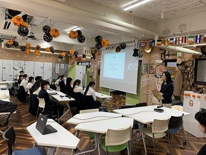
開会の挨拶の後、京都府内から参加した６校12チームによる試合が行われ、本校からは４チームが参加しました。この日は、ネットショッピングと実際にお店に行く買い物とどちらが良いかなどが論題となりました。
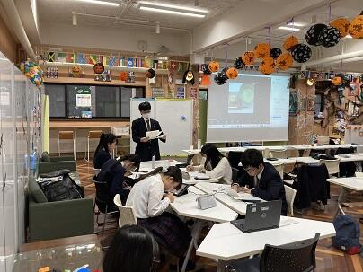 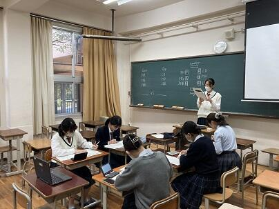
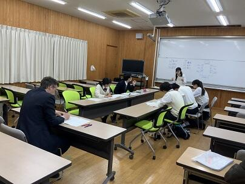 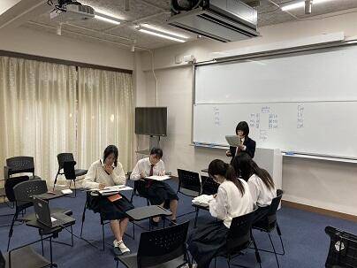
結果、本校から参加したチームが優勝、第３位となり、表彰されました。
また、各回で優秀な成績を収めた参加者に贈られる賞として、ベストディベータ賞を５名、POI（Point of Information）賞を４名の生徒が受賞しました。
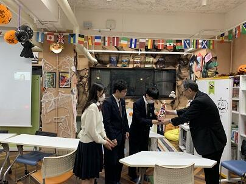 
全体を通して、嵯峨野高校ESS部の英語ディベートのレベルアップが実感できる大会でした。今後も様々な機会で英語ディベートに積極的に取り組んで行きます。
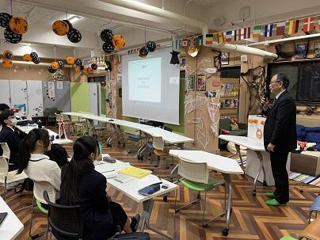 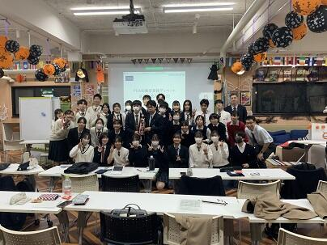
2023年11月07日
11月４日・５日に実施された「西陣TABI」にダンス同好会・軽音楽部の生徒が参加しました。
西陣の商店街を訪れた方にダンスや音楽を披露しました。
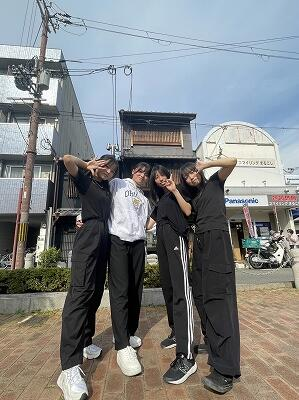 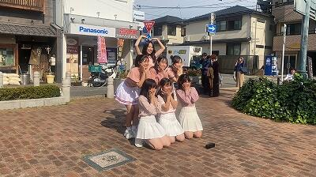
ダンス同好会の生徒たち
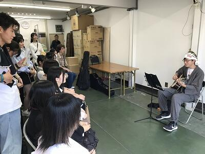
軽音楽部員の弾き語り

本校ALTも出演！

軽音楽部員はボランティアスタッフとしても活動しました。
2023年11月06日
11月5日行われた、京都府高等学校総合文化祭放送部門の結果は、
◎ビデオメッセージ部門(2年生制作)→1位 R06全国総文岐阜大会出場
◎オーディオメッセージ部門(1年生制作)→1位 R06全国総文岐阜大会出場
◎朗読部門新人戦→1年生女子1位 R06近畿総文福井大会出場
◎アナウンス部門→2年生女子4位 全国高校駅伝閉会式司会担当
となりました。
全国総文は25年間で24回目の出場(京都の放送部で最多)、近畿総文に読みで出場するのは4年振り、全国高校駅伝の司会は2年連続8回目となります。
番組制作やアナウンス原稿の取材では多くの皆様にお世話になりました。どうもありがとうございます！
全国、近畿でも入賞できるよう頑張ります！
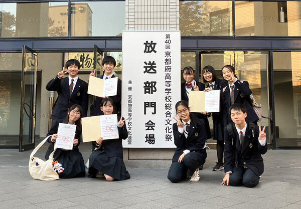
2023年11月02日

読書の秋ですね！
今日は嵯峨野高校の図書館の様子をレポートします。

3年生の面接練習にて【AI(人工知能)社会におけるデザイナーという職業の可能性】を尋ねたところ、冒頭で以下の答えが返ってきました。
「AIは大量データの分析し、最適解を提案することができます。
ただAIには「伝えたい」という思いがない。そこに人の可能性はあると思います。」
なんと素敵な回答！
...そして、それを聞いて頭に浮かんだのが嵯峨野の図書館でした。
図書委員さんが思いを詰め込んだ「本の福袋」企画


まさに現在進行形のその作業


...受験前の心境を表すような3年生のおすすめ本


司書さんの「伝えたい」思いが育んだ嵯峨野の図書館は本校の自慢です。


ちなみに、図書館横には数学の先生の思いを詰め込んだパズルもあります...


「伝えたい」が溢れる嵯峨野高校。
だって皆さんは可能性の塊なんです。
2023年10月31日
金属バットとボールを蹴る音で始まる嵯峨野高校の朝。


朝早いグランドにはマネージャーの姿も...

洗濯や体調管理のみならず、朝練も付き合って、さらに夕方には毎日10合のお米を炊いて、おにぎりを作っているそうです。
体を大きくするために練習後の部員が食べるとのこと。なかなか大変そうだけど、何が "やりがい" なのかを聞いてみると...
「近くで選手の成長を見られるのが嬉しい」
と笑顔で答えてくれました！
これは野球部さん、頑張るしかないね！
しかし、なんと爽やかな...生徒たちは朝日のような眩しさです。
一人で見るのはもったいないので、こちらでおすそ分け。


保護者の皆様、まだ暗いうちに家を出たお子さんは
嵯峨野高校のグランドで輝いていますよ。

2023年10月26日
10月26日 第二学年研修旅行 その12
小樽班別研修です。生徒たちは班ごとに自由に活動しています。
 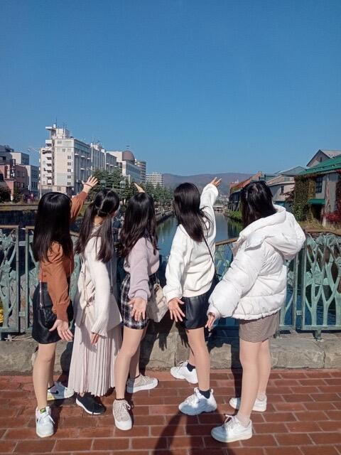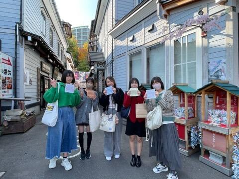
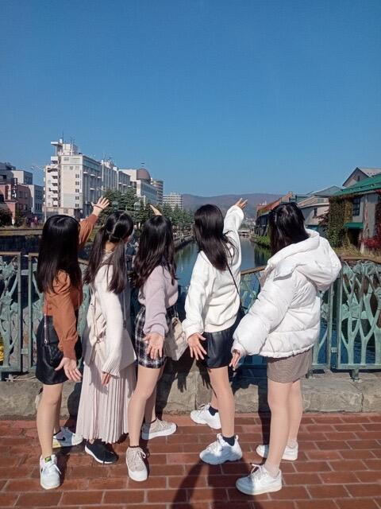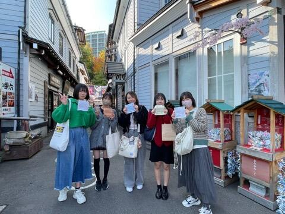
 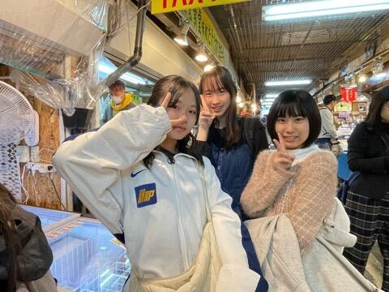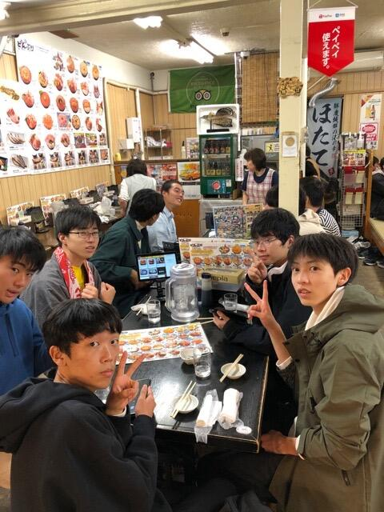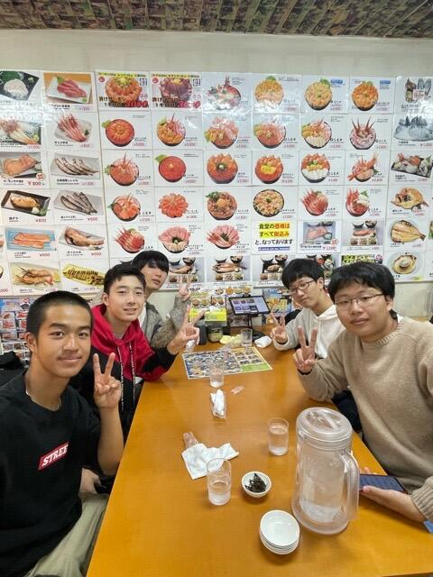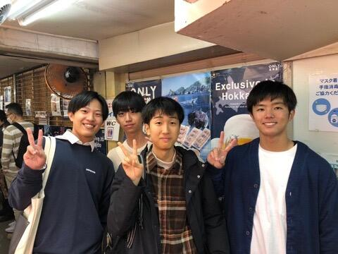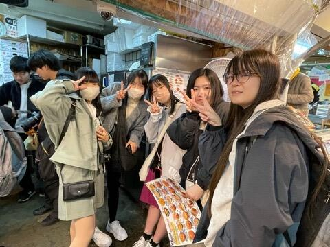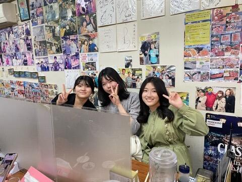
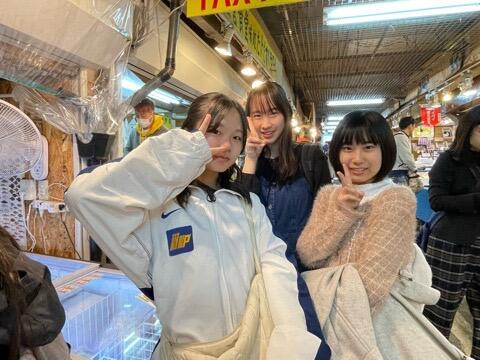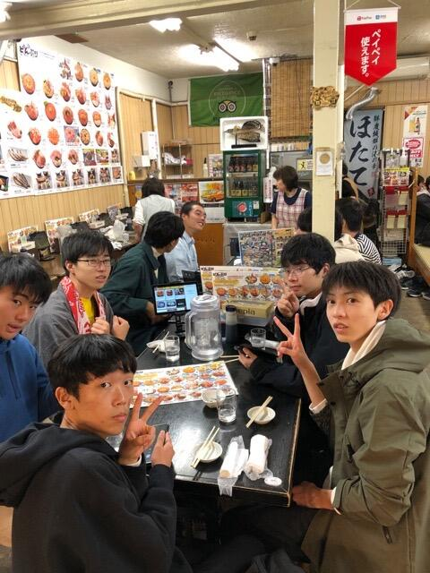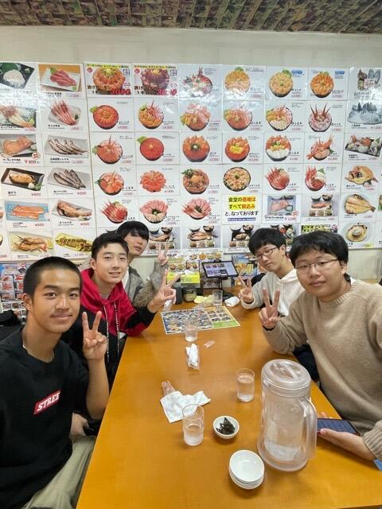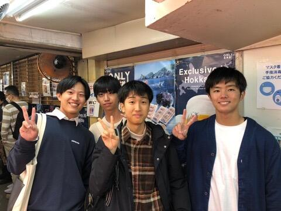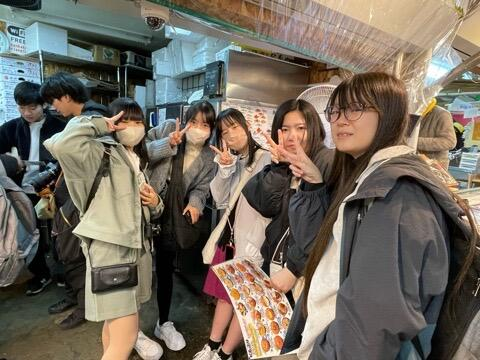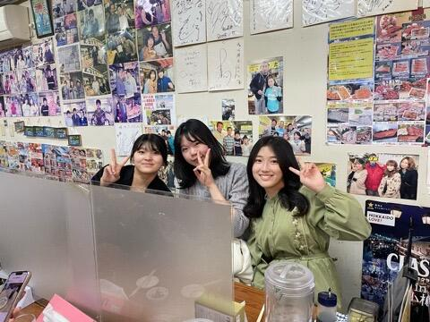
お土産を買ったり、昼食にお寿司を食べたり、運河を散策したり、オルゴール館を見学したりと、小樽を満喫していました。
地元の名物に舌鼓を打つのも、文化を感じるのに必要なことですね。
2023年10月26日
嵯峨野高校は近代的な校舎ですが、デザインに日本のお城の要素が取り入れられています。
時計台も後ろから見ると...さもありなん。

部活紹介ビデオを見る軽音部のみなさん。きちんと並んでしまうお行儀のよさが可愛いです。
晴れた日に度々干されるワンダーフォーゲル部のテント。頑張ったね。
.jpg)

廊下を歩いていると...落書きでしょうか？いやいや、数式の探究でした。..そっとしておこう。


2年生は修学旅行中。


しばらく使われてない下駄箱に映る紅葉が少しずつ進んでいます。北海道でたくさんの思い出を作って、どうか元気に戻っておいで。


2023年10月26日
10月26日 第二学年研修旅行その11
今日は、研修旅行最終日です。今朝の札幌は霧ですが、霧が晴れれば快晴の予報です。
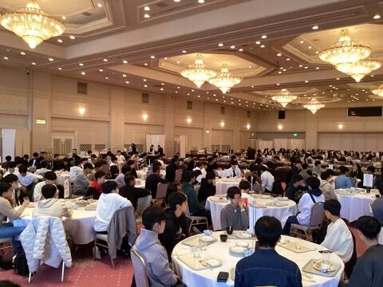
これから小樽で班別研修をします。班別で市内観光をして、昼食を取ります。また、写真コンテスト用の風景写真も撮影する予定です。
そのあと、新千歳空港まで移動し、帰京する予定です。
2023年10月25日
10月25日 第二学年研修旅行その10
3日目夜には、研修旅行委員で準備してきた学年レクを行いました。
バースデーチェーンで誕生日順に並んだあと、伝言ゲームを行いました。伝言内容は先生の秘密・・・生徒たちは笑いつつも必死に伝言していました。いつに間にか秘密が混ざり合い、最後にはとんでもない秘密になっていました？

その後、北海道に関するクイズを行いました。間違え＝即脱落の厳しいルールで、正解が発表されると喜びと悔しさの悲鳴が上がりました。最終問題で全員間違える、絶妙な難易度設定ででした。
爆笑オープニングアクト、ダンス発表の有志企画もあり、最後は全員で踊って盛り上がりました。
2023年10月25日
10月25日 第二学年 研修旅行その9
植松電機様のロケット体験プログラムに参加しました。今年度初めての取り組みで、研修旅行で１番楽しみにしている生徒もいました。
午前は、植松努氏の講演と簡易ロケットの作成を行いました。

植松氏が宇宙開発にかける思いと子供達に伝えたいメッセージを熱く語っていただきました。
生徒たちはしっかりと話を聞き、宇宙開発にも思いを馳せている様子でした。
簡易ロケット作成は、ロケット作成キットを使用しました。周囲の人と相談しながら作成し、思い思いの色付けもしました。

昼食後、午後からは、CAMUIロケットエンジンの燃焼実験を見学しました。燃焼の瞬間の爆音に驚きましたが、本物に触れることができました。
さらに、午前に作成したロケットに固体燃料ユニットを装着してロケットの打ち上げを体験をしました。手作りのものですが、最大数10mの高さに達し、上空でパラシュートが開き、本体をキャッチできる生徒もいました。


植松氏の講話とロケット体験プログラム、どちらも学びにつながったことと思います。とても有意義な経験になりました。
2023年10月25日
10月25日 第二学年 研修旅行その8 本日の予定
今朝も良い天候が続いています。
本日はロケット開発もされている植松電機で、社長講話、ロケットエンジンの燃焼実験見学、ミニロケットの作成を行います。
個人の旅行ではなかなかできない、研修旅行ならではの内容です。
実りあるものになるよう、しっかり学んできたいと思います。
〒616-8226
京都市右京区常盤段ノ上町15番地
TEL 075-871-0723 FAX 075-871-0724
E-mail [email protected]
Copyright (C) 京都府立嵯峨野高等学校 All Rights Reserved.